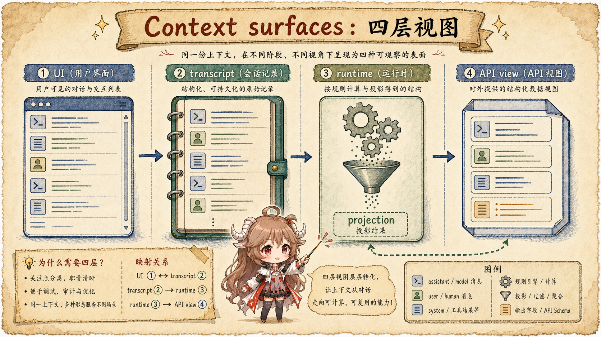
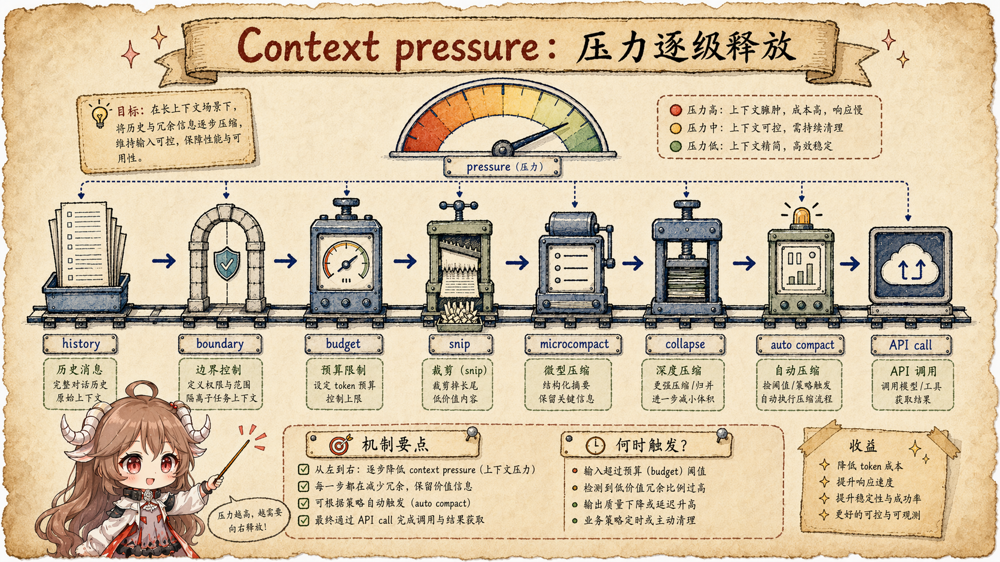

第一篇先把一次任务从 CLI、REPL、队列一路跟到 query()，
第二篇再把 CLAUDE.md、auto memory 和 user context 这些长期账本单独拆开。
这一篇才停在 query() 每次发模型请求之前和 compact 之后，看 Claude Code 怎样决定“下一次模型到底看见什么”。
先看一个很普通的场景。你让 Claude Code 修一个线上 bug。它先读项目里的 CLAUDE.md，
又看 git status，接着 Read 几个文件、Grep 一圈、跑测试、贴日志、
再改代码。中途你补一句“别改生成文件”。这时上下文窗口越来越满，模型并不是突然“忘了”，而是运行时开始做选择：
哪些东西必须留给模型，哪些只要本地保存，哪些可以被替换成一句“旧工具结果已清理”，哪些必须总结成一段新的恢复上下文。
这件事如果只用“聊天记录”来理解，很快就会卡住。因为上下文里混着好几类东西：系统提示词、工具 schema、 用户消息、工具调用、工具结果、文件快照、项目记忆、技能内容、hook 输出、缓存断点、compact 边界。 它们不是同一本账。保存过，不等于下一次 API 请求一定会原样带上。
这篇的核心结论先说出来：Claude Code 的上下文管理不是一把剪刀，而是一条减压流水线。 它先构造 model-visible view，再用多层机制降低窗口压力，最后才用 compact 建立新的恢复点。
阅读契约：这篇只追踪三组 owner：UI / transcript / runtime / API view 谁拥有哪份历史； tool result、cache edit、compact summary 哪些是有损替换；compact 之后哪些上下文稳定保留、哪些重新加载、哪些只在条件满足时触发。 读完应该能回答：下一轮模型请求看到什么，本地还保存什么，什么已经被 summary 或投影改写。
先把证据边界放在桌面上。本文的产品层说法来自 Claude Code context window 文档、 Claude Code memory 文档、 Anthropic prompt caching 文档 和 Messages API 契约；源码层说法来自 Rememorio/claude-code 公开镜像。 这个镜像不是 Anthropic 官方源码仓库，所以本文只把可见代码写成直接事实；遇到 feature gate、服务端缓存或 provider 内部行为，只描述客户端可见的请求形状和恢复边界。
这篇只回答五个问题：
- Claude Code 到底把哪些东西当成“上下文”？
- 为什么
/context看的是 API view，而不是 REPL 原始滚动历史？ query()在真正调用模型前，按什么顺序给上下文减压？- compact 发生时，旧消息被删了吗，还是被替换成了新的恢复记录？
- compact 之后，
CLAUDE.md、文件、技能、工具 schema 这些东西为什么还能回来？
一、先别急着总结，先分清四张桌面
我们先不用源码名词，换个日常比喻：你在桌上修电脑。桌面上有说明书、螺丝刀、刚拆下来的零件、 拍过的照片、维修日志和最后写给下一班人的交接单。它们都跟“这次维修”有关，但保存方式完全不同。 Claude Code 的上下文也是这样。

1.1 基础上下文：每轮都要先铺桌布
Claude Code 有两类很早进入请求的基础上下文。第一类是系统侧上下文，
getSystemContext()
会把对话开始时的 git 状态、分支、最近提交等整理出来。代码里明确写着这是一份 snapshot，
不是会自动跟着仓库变化的实时状态。第二类是用户侧上下文，
getUserContext()
会收集 CLAUDE.md 这类 memory 文件，再补上当天日期。
这两类上下文不是普通聊天消息。进入 API 前，
appendSystemContext()
会把 system context 接到系统提示词后面，
prependUserContext() 则会生成一个带 <system-reminder> 的 meta user message，
放在消息数组最前面。也就是说，模型看到的是一份“这轮可参考的工作环境”，而不是用户真的敲了一段系统说明。
shape-level:
system = default system prompt
+ "gitStatus: ..."
+ "cacheBreaker: ..." // feature gated
messages = [
meta user: "<system-reminder> ... CLAUDE.md ... currentDate ...",
...runtime projected messages
]1.2 原始历史不是模型视图
你在终端里看到的 REPL 历史，和模型下一次收到的 messages，不是一回事。源码里最直白的证据是
/context 的注释：
它要展示 what the model actually sees，而不是 REPL 的 raw history。
非交互版本也把这条规则写进
collectContextData()：
统计前要先经过 compact boundary、context collapse projection 和 microcompact。
这就像账本和报表的关系：账本里可以保留很多细节，报表只呈现这次决策需要看的那一页。 模型每次请求拿到的是报表，不是整本账。
| 表面 | 源码入口 | 模型是否直接看到 | 保护的东西 |
|---|---|---|---|
| UI / REPL 滚动历史 | messages 与显示组件 |
不会原样进入 API | 用户可见性、交互体验、回看完整过程。 |
| 磁盘 transcript | session storage / resume 路径 | 恢复时被重新投影 | 会话可恢复、compact 前细节可追溯。 |
| runtime view | getMessagesAfterCompactBoundary()、projectView() |
还要继续规整 | 剥离旧 compact 前缀、应用 collapse 与 snip 规则。 |
| API view | normalizeMessagesForAPI()、addCacheBreakpoints() |
是请求主体 | 满足 provider 契约、缓存纪律和工具结果配对。 |
1.3 API 边界还会再洗一遍
进入 provider 之前，消息还会经过
normalizeMessagesForAPI()。
这里会去掉 display-only 的 virtual message、过滤系统消息、合并连续 user message、处理不再可用的 tool reference，
还会针对图片或 PDF 过大的错误，把对应 meta user message 里的问题 block 删掉，避免下一次请求反复把同一个大对象发过去。
这一步的意义很实际：UI 可以为了人类好读保留很多包装，API 却只接受一组合法 message param。 Claude Code 不是把本地状态“倒进去”，而是每轮都重新做一次出境检查。
二、真正的主线在 query() 里
如果只看 /compact 命令，会误以为“上下文管理 = 手动压缩”。真正的主线在
query()。
这个函数每次进模型循环时，都会先拿到当前 messages、toolUseContext、模型配置和缓存策略；然后在发请求前，按一串固定顺序处理上下文压力。
先把这串顺序讲成人话：它不是“一上来就总结”，而是先问五个更小的问题。上一张 compact 交接单之后还有哪些消息？单条工具结果有没有超预算？旧历史里有没有可以先 snip 的部分？ 旧工具结果该直接清空，还是走 cache editing？已经提交过的 Context Collapse 能不能把 API view 投影短一点？这些都还不够，才轮到 auto compact 把长会话压成 summary。

query() 的减压顺序很重要：越靠前越便宜、越保留细粒度；越靠后越像有损恢复。2.1 第一步：从最后一个 compact 边界之后开始
query() 先执行
getMessagesAfterCompactBoundary(messages)。
这个函数会找到最近的 compact boundary，只保留边界之后的消息；
源码注释还提醒，boundary 本身是 system message，之后会被 API normalizer 过滤掉。
这一步像翻账本时先找到“上次交接单”，前面的旧页不会直接进入当前报表。
接着是工具结果预算。
applyToolResultBudget()
会在 per-message aggregate tool result size 超预算时替换内容。这个状态挂在
ToolUseContext.contentReplacementState
上，注释说它是 per-conversation-thread 的 replacement state；主线程和可恢复 subagent 会持久化记录，短生命周期 fork 则不需要。
2.2 第二步：先用小刀，不急着搬家
后面几步就像收拾桌面：先把不该再进模型的旧页抽出来，再看需不需要正式搬家。HISTORY_SNIP 打开时，
snipCompactIfNeeded()
会在 microcompact 之前运行。它释放出的 token 差额会继续传给 auto compact，
因为被 snip 掉的消息已经不在这次 API view 里了，但幸存 assistant message 上的 usage 可能还带着 snip 前的 token 估算。
那 snip 到底干了什么？先说结论：它不是“时间久了就从最开头开始删”。如果用户最开始布置了一个任务， 后面跑了几百轮工具调用，按时间裁掉最早消息当然会把任务目标、约束和验收标准一起弄丢。Claude Code 已经有 compact boundary 负责截断旧前缀；snip 这把小刀处理的是活动上下文里的指定中间段。
不是这样：
U0(最初任务) A1 T1 A2 T2 ... A80 T80
-> 按时间删掉最早 N 条
而是更接近这样：
API-bound copy: U0[id:a1] A1 T1 U2[id:b7] ... U80[id:k9]
snip boundary: removedUuids = [uuid(T12), uuid(A13), uuid(T13), ...]
next API view: U0 A1 T1 U2 ... [中间一段被过滤] ... U80
本地 UI / JSONL：
仍保留原始消息；resume 时按 removedUuids 重放同一组删除
从公开源树能看到的是它的投影和恢复契约：
getMessagesAfterCompactBoundary()
默认会再调用 projectSnippedView()，也就是 compact boundary 之后还要过滤 snipped messages；
UI 渲染则显式传入 includeSnipped: true，
让用户还能在 scrollback 里看到完整历史。换句话说，snip 不是删掉磁盘账本，也不是把内容改成一句占位符，
而是把某些中间消息从模型下一次会看的视图里摘出去。
为什么能做到“指定中间段”？因为 Claude Code 会给 API-bound 的用户消息追加稳定的
[id:...] 短标签；
注释说明这些标签是给 snip tool 引用消息用的，而且只改 API-bound copy，不改存储消息。
所以 snip 的删除单位不是“第几分钟之前的所有东西”，而是一次 snip execution 选中的消息 UUID 集合。
公开快照没有暴露 selector 的具体策略和 prompt，因此这篇不把“怎么判定低价值”写成源码事实；
能确定的是执行结果会落成 removedUuids，后续投影和恢复都围绕这组 UUID 工作。
这和 compact 的边界也不一样。resume 代码的注释
说得很直白：compact boundary 是截断一个前缀，snip 删除的是中间 ranges；JSONL 仍然 append-only，
所以 snip boundary 必须记录执行时移除的 removedUuids，加载会话时再重放同一组删除，并把幸存消息的
parentUuid 跨过缺口重新接上。否则恢复出来的 conversation chain 会把 snip 前的历史又拼回来，
甚至直接撑爆上下文。
这样就能理解它为什么叫“小刀”：它不是一次完整搬家，不生成新的全局 summary，也不负责清理所有旧工具结果；
它是在保留本地证据和 UI scrollback 的同时，把模型视图里的某些低价值中段挖掉。后面的 /compact
路径也会先投影 snipped view，避免 compact model 把已经主动移出活动上下文的内容又总结回来。
另外，源码里还专门注明 带 tool_reference 的消息会被 snip 保护，
这也说明它不是简单按时间扫过去，而是在删除前要尊重后续运行仍依赖的引用。
snip 之后，才轮到
microcompact
处理旧工具结果。它关心的不是“把整段会话总结一下”，而是工具结果这种高占用、低语义密度的块：能少发就少发，能不破坏热缓存就不破坏。
microcompactMessages()
有两个可见路径。一个是 time-based microcompact：如果距离上次 assistant message 的间隔超过配置阈值，
就把旧工具结果内容改成
[Old tool result content cleared]
这类占位文本，只保留最近若干个工具结果。另一个是 cached microcompact：在 feature gate、模型和主线程条件都满足时，
它不会改本地 message，
而是把要删除的 tool result 先排成 pendingCacheEdits。等 Claude Code 走到
services/api/claude.ts 的 Anthropic API 适配层
组装请求时，才把它翻译成 payload 里的 cache_edits block。
cache_edits 干的事也要分层看。Claude Code 会把每个可删的旧 tool_result
标上 cache_reference，通常用它原来的 tool_use_id；新的 cache_edits
block 则长得像“delete 这个 cache_reference”。这样本地 transcript 仍保留完整工具结果，
但 provider 处理这次 prompt cache 时，可以按引用把缓存视图里的旧工具结果删掉。源码后面还会读
cache_deleted_input_tokens，用 API 返回的真实删除 token 数补发 microcompact boundary message，
所以这不是单纯客户端自嗨的标记，而是一段由 Claude Code 适配层表达、provider 缓存语义执行的删除意图。
| 路径 | 什么时候触发 | 改哪一层 | 保护的东西 |
|---|---|---|---|
HISTORY_SNIP |
query() 进入 microcompact 之前，某次 snip execution 已经选出要移出模型视图的消息 UUID。 |
API-bound view 按 removedUuids 过滤中间 ranges；UI scrollback 和 JSONL 仍保留证据，resume 再重放删除。 |
不是按时间删最早前缀，而是先移走可指定的低价值中段，并让 auto compact 阈值扣掉 tokensFreed。 |
| time-based microcompact | 距离上次主循环 assistant message 超过阈值，缓存前缀已经偏冷。 | 直接把旧工具结果正文替换成占位文本。 | 减少下一次要重写的 prompt 体积；因为源码判断缓存已冷，不再为旧热前缀做 cache edit。 |
| cached microcompact | cache editing 可用、模型支持、并且是主线程请求。 | 本地 message 不变；Claude Code 的 Anthropic API 适配层把 pendingCacheEdits 插成 cache_edits block。 |
保留热前缀的复用路径，同时让模型视图删除旧工具结果。 |
| 不触发 | 外部构建、非支持模型、subagent、或没有达到阈值。 | microcompactMessages() 原样返回 messages。 |
避免在不确定 owner 的路径上改主线程状态，后续压力交给 auto compact。 |
那么占位符会不会影响 Prompt Cache？会改变这一次请求文本，这是事实；但 time-based microcompact 的前提也是 “距离上次 assistant message 太久，server cache 已经过期，完整 prefix 本来就要重写”。所以它不是把一个本来能命中的热缓存打碎， 而是在冷缓存重写前，把旧工具结果换成更短的占位文本。真正要保护热前缀时，源码选择的是 cached microcompact： 本地 message 不动，删除动作留给 Claude Code 的 Anthropic 适配层和 provider cache editing 语义。snip 对 Prompt Cache 的影响则更接近一次 model-visible view 的中段删除：它会改变 provider 看到的消息序列，但它不是这个占位符路径，也不是 cached microcompact 那种专门用 cache edit 表达删除的路径。
2.3 第三步：Context Collapse 是 read-time projection
如果 CONTEXT_COLLAPSE 打开，query() 会在 auto compact 之前调用
contextCollapse.applyCollapsesIfNeeded()。
注释解释得很清楚：collapse 是 read-time projection，summary messages 住在 collapse store 里，不在 REPL 的完整历史数组里。
这意味着 UI 还可以保留更完整的历史，而 API view 可以先投影成更短的形状。
进入 collapse projection 之前：
active messages = M1 M2 M3 M4 M5 M6 M7 M8 M9 M10
collapse store = C1: summary(M2...M8)
投影后的 API-bound view：
active messages = M1 C1(summary message) M9 M10
REPL / resume 侧：
原始历史、commit log、staged snapshot 仍由运行时保存和重放
所以你说“是不是构造一个 summary + 去掉裁剪的 + 增量消息的请求”，方向基本对，但要把 owner 说准：
query() 构造的是模型这次要看的投影视图。已经归档的历史 span 不再原样进入 API view，
而是由 collapse store 里的 summary message 代表；span 后面的增量消息继续保留。REPL 的完整历史和恢复元数据则不等于这次 API payload。
这当然也会影响 Prompt Cache，因为 provider 看到的前缀形状变了：第一次从“旧详细前缀”切到“summary + 增量消息”时， 旧前缀不能当作完全相同的请求继续复用。但它排在 auto compact 前，是为了避免另一种更重的损失：如果 projection 已经把上下文压到阈值以下，就不必把整段会话合成一个更粗的 compact summary。换句话说，Context Collapse 是用一个新的、较短的稳定前缀，换掉越来越昂贵的旧详细前缀；后续轮次可以围绕这个投影视图重新形成缓存收益。
2.4 最后才轮到 auto compact
到这里还装不下，才进入
autoCompactIfNeeded()。
autoCompact.ts
先计算有效窗口：模型 context window 减掉最多 20k 的 summary 输出保留，再减掉 13k 的 auto compact buffer。
当 token 使用量超过阈值，并且用户没有关闭 compact 或 auto compact 时，才会真正 compact。
这也是为什么“窗口还剩一点点”不代表还能继续随便塞东西。Claude Code 需要给 summary 输出、手动 compact、重试和工具调用留缓冲。 如果 auto compact 被关闭，硬阻塞检查 会在接近极限时直接返回 prompt-too-long 错误，给用户留一点手动处理空间。
2.5 最后组装 API 请求：缓存断点只放一个
真正调用模型发生在
deps.callModel()。
这时 messages 会先被 prependUserContext() 加上用户上下文，system prompt 会带上 system context，options 里还会传入模型、工具、
MCP 工具、agent definitions、task budget、skipCacheWrite 等信息。
API 层再由
paramsFromContext()
生成实际请求，其中
addCacheBreakpoints()
会给消息加 prompt cache 断点。注释里有个很关键的约束：每次请求只放一个 message-level cache_control marker。
普通主线放在最后一条消息；fire-and-forget fork 使用 skipCacheWrite 时，marker 会前移到倒数第二条，也就是共享前缀的尾部。
shape-level:
main turn:
S + M_last(cache_control) -> read/write S + M_last
fire-and-forget fork:
S(cache_control) + F -> read S, avoid writing S + F tailskipCacheWrite 的请求策略。三、compact 不是删聊天，是立一块恢复碑
compact 真正发生时，Claude Code 做的不是“把前面的聊天记录删掉”。更准确的说法是： 它在本地历史里插入一个 compact boundary，再把旧上下文总结成一条可继续工作的 summary user message， 同时恢复一些后续工作必需的附件和 hook 结果。

3.1 手动和自动最终都走向 compactConversation()
手动 /compact 的入口在
commands/compact/compact.ts。
它会先裁到 compact boundary 之后，再在没有自定义指令时尝试 session memory compaction；
如果没有走 session memory，就先跑 microcompact，再调用 compactConversation()。
自动 compact 的入口在
autoCompactIfNeeded()，
它会先判断阈值、熔断连续失败，再同样尝试 session memory compaction，最后进入 compactConversation()。
这里的分叉很有意思：session memory compaction 是一条更细的路径；传统 compact 是一条大搬家路径。 但不管哪条路，成功以后都会清理失效缓存、标记 post-compaction，并把下一轮运行时指向新的上下文形状。 这不是单纯的“省 token”，而是在告诉后续请求：旧前缀到这里结束，新的恢复点从这里开始。
3.2 compact summary 是一次“无工具旁路”
compactConversation()
开始后，先跑 PreCompact hooks，把 hook 给出的指令并入用户自定义指令，然后生成 summary request。
summary prompt 本身在
prompt.ts：
它明确要求模型只输出文本，不要调用工具，并要求先用 <analysis> 组织，再给出 <summary>。
getCompactPrompt()
会把这个 no-tools preamble、base compact prompt 和 no-tools trailer 拼起来。
这段设计保护的是一个很朴素的不变量：compact 是为了把旧上下文变成交接单，不是让模型顺手再读文件、改代码、跑命令。
如果 summary 过程中还能调用工具，compact 本身就会制造新的上下文压力，甚至改变当前任务状态。
源码里 full compact 还会读取 tengu_compact_cache_prefix，让 summary 生成这条旁路尽量共享主会话的缓存前缀；
也就是说，summary 不是性能世界之外的“整理文本”，它本身也是一次需要维护请求形状的模型调用。
shape-level:
compact summary request =
stripped conversation messages
+ compact prompt(no tools)
assistant output =
<analysis> ... </analysis>
<summary> ... </summary>
installed message =
compact summary user message3.3 compact 前会先把不该进 summary 的东西拿掉
生成 summary 之前，源码还有一些很实际的清洁动作。
stripImagesFromMessages()
会把图片和文档替换成文本 marker，避免 compact 请求本身被媒体内容撑爆；
stripReinjectedAttachments()
会过滤掉 compact 后本来会重新注入的 skill discovery / skill listing 附件，避免 summary 被陈旧的技能推荐污染。
如果 compact 请求自己也遇到 prompt-too-long，
truncateHeadForPTLRetry()
会按 API round 分组，从最老的组开始丢一部分再重试。这是有损兜底，但比让用户卡死在“连 compact 都 compact 不动”要好。
3.4 compact 结果的顺序就是恢复顺序
compact 成功后，
compactConversation()
会创建 compact boundary 和 summary message。summary message 的内容来自
getCompactUserSummaryMessage()：
它告诉下一轮“本会话从一个跑出上下文的旧对话继续”，必要时还给出 transcript 路径，并在自动 compact 时要求模型不要寒暄、不要复述、直接从中断处继续。
最后由
buildPostCompactMessages()
统一产出 compact 后的消息数组，顺序是：
post compact messages =
boundaryMarker
+ summaryMessages
+ messagesToKeep?
+ attachments
+ hookResults
这里的 messagesToKeep? 是可选保留段，不代表 compact 会把旧历史原样留住。
对于需要保留最近后缀的路径，
annotateBoundaryWithPreservedSegment()
会把保留段的 head、anchor、tail 写进 boundary metadata，方便加载时重新接链。
普通 full compact 的主语义仍然是 boundary + summary + attachments + hookResults：
先立恢复点，再有限恢复继续工作需要的材料。
回到 query()，如果拿到 compactionResult，
它会把这些 post compact messages 逐条 yield 出去，
然后把 messagesForQuery 直接替换成 post compact messages，当前这次 query 继续往下走。
也就是说，compact 不是下一轮才生效；这次循环里就会改用新的上下文形状继续请求模型。
四、哪些东西会留下，哪些只是重新装回去
compact 之后，很多人会问：“那我之前读过的文件、加载过的技能、项目记忆是不是都没了？” 答案不是简单的是或否。要看它属于哪种 owner。

4.1 系统提示词和工具 schema 不靠聊天历史存活
系统提示词、工具 schema、MCP 工具和 agent definitions，本来就不是靠旧聊天历史存活的。
API 请求每次都会从 runtime 重新组装：query() 把 tools、mcpTools、
agents 传给 callModel()；
buildSystemPromptBlocks()
也会把系统提示词拆成带 cache_control 的 text blocks。
这类内容像工具箱，不是维修日志。日志 compact 了，工具箱还在。
4.2 CLAUDE.md 和 memory 会重新算一次
CLAUDE.md 这类 memory 文件属于用户上下文。compact 后，
runPostCompactCleanup()
会在主线程 compact 时清掉 getUserContext cache，并 reset memory file cache。
注释解释了原因：如果只清内层 getMemoryFiles，下一轮还可能命中外层 getUserContext memoize，
导致应该触发的 InstructionsLoaded hook 根本不会跑。
所以 memory 不是被 summary “完美保存”，而是 compact 后重新按当前规则加载。这个区别很重要： 如果项目里的 memory 文件变了，下一轮应该看到新状态；如果它没有变，就会重新注入同样的项目约束。
4.3 文件附件和技能内容是“有限恢复”
compact 成功后，Claude Code 会补回一部分文件附件、异步 agent 附件、plan mode 附件和已调用技能附件。 常量 写明了几个上限：最多恢复 5 个文件、post-compact 文件 token 预算 50k、单文件最多 5k、技能预算 25k。 compact 后附件生成 会基于 compact 前的 readFileState 和当前工具状态构建这些恢复消息。
这又是一个容易误读的点：Claude Code 不是保证“读过的每个字都还在”。它恢复的是最近、重要、预算内、继续工作需要的部分。 超出预算的文件内容，仍然要靠后续工具调用重新读。
4.4 技能列表不会无脑重注入
runPostCompactCleanup()
注释里专门说，compact 后不会清 invoked skill content，因为技能内容要跨多次 compact 存活；
但它也
不会重置 sent skill names，
因为无脑重发完整 skill listing 只是制造 cache_creation 成本。
compactConversation() 里也会保留 invoked skills，并重新宣告 deferred tools、agent listing 和 MCP instruction delta。
这类设计都是为了同一个目标：compact 后不是“什么都忘了”，也不是“什么都重来一遍”，而是把继续工作必需的能力边界重新摆正。
五、把这套机制压成几条规则
读完这条链路，再回头看“上下文快爆了”这个问题，就不该只想着 summary。Claude Code 的实际策略更像四句操作规则。
| 遇到的压力 | 先用的机制 | 保住的东西 | 代价或边界 |
|---|---|---|---|
| 旧 compact 前缀太长 | getMessagesAfterCompactBoundary() |
恢复点之后的连续工作视图。 | compact 前细节只能通过 summary 或 transcript 追溯。 |
| 工具结果占用太多 | tool result budget / microcompact | 工具调用顺序和必要语义。 | 旧工具结果正文可能被占位符或 cache edit 替换。 |
| 还有机会保留细粒度历史 | context collapse projection | REPL 完整历史和 API view 的分离。 | feature gate 下才可见；投影算法细节不能从缺失源码里硬推。 |
| 快到模型窗口极限 | auto compact / manual compact | 可继续工作的 summary 恢复点。 | summary 是有损的，文件和技能只按预算恢复。 |
| 旁路 fork 只想借用前缀 | skipCacheWrite 调整 cache marker |
共享前缀的 prompt cache 稳定性。 | fork-only suffix 不写成未来主线会继续的尾巴。 |
所以，Claude Code 的上下文管理不是“记忆力更好”，而是“账本分得更细”。
UI 可以保留滚动历史，磁盘可以保留 transcript，runtime 可以重载 CLAUDE.md 和工具 schema，
API view 可以裁掉旧前缀、替换旧工具结果、加缓存断点，compact 则负责在必须有损时写出一份交接单。
这也是后面读工具、权限、MCP、hooks 和 subagent 的前提：只要一个机制会改变模型下一次看到的东西，
它就不是“显示层的小功能”，而是在改这本运行时账本。下一篇就沿工具层继续看：
模型提出 tool_use 后，运行时怎样验证、调度和回填结果。
参考源码与文档
- Rememorio/claude-code 公开镜像
- Claude Code context window 文档
- Claude Code memory 文档
- Anthropic prompt caching 文档
- Anthropic Messages API
- 小林 Coding：上下文压缩参考阅读
- context.ts：system/user context
- utils/api.ts：appendSystemContext / prependUserContext
- query.ts：pre-API context pipeline
- utils/messages.ts：snip message id tags
- utils/messages.ts：snip 后的 active message projection
- sessionStorage.ts：resume 时重放 snip removals
- toolSearch.ts：snip 保护 tool_reference 消息
- query.ts：callModel request options
- microCompact.ts：microcompact paths
- autoCompact.ts：threshold calculation
- compact.ts：buildPostCompactMessages
- compact.ts：compactConversation
- prompt.ts：compact prompt and summary wrapper
- claude.ts：addCacheBreakpoints
- postCompactCleanup.ts：post-compact cleanup